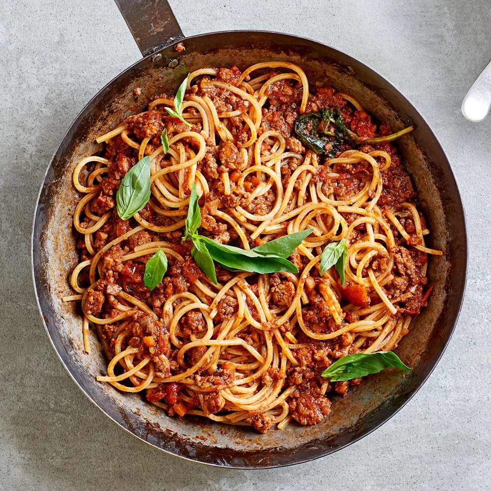

Spaghetti Bolognes

Description
How to make a spaghetti bolognese at home!
Ingredients
- 1 pound of ground beef
- 3 cups of water
- 18 fluid ounces tomato juice
- 1 can tomato paste
- 2 tablespoons dried minced onion
- 1 1/2 teaspoons chili powder, or more to taste
- 1 teaspoon of white sugar
- 1 teaspoon of dried oregano, crushed
- 1 teaspoon of garlic salt
- 1 teaspoon of salt
- 7 ounces spaghetti
Steps
- Heat a large skillet over medium-high heat. Cook and stir beef in the hot skillet until browned and crumbly, 5 to 7 minutes.
- Mix water, tomato juice, tomato paste, minced onion, chili powder, sugar, oregano, garlic salt, and salt into ground beef;
cover skillet and bring to a boil. Reduce heat to medium-low and simmer beef mixture, stirring occasionally, until flavors
have blended, about 30 minutes.
- Place spaghetti into beef mixture and stir to separate strands; cover skillet and simmer, stirring frequently, until
spaghetti is tender, about 30 minutes.